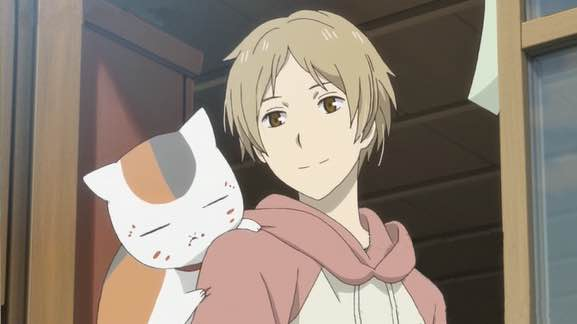
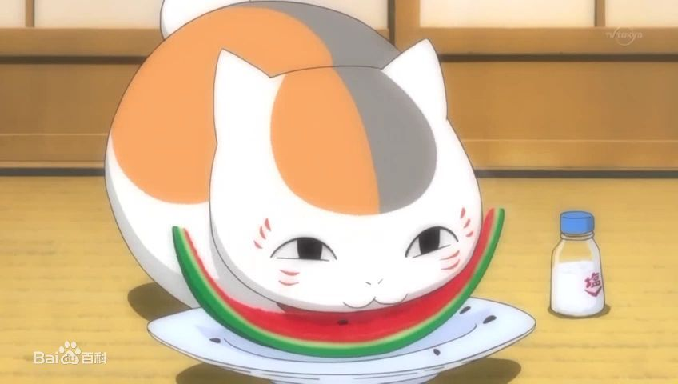
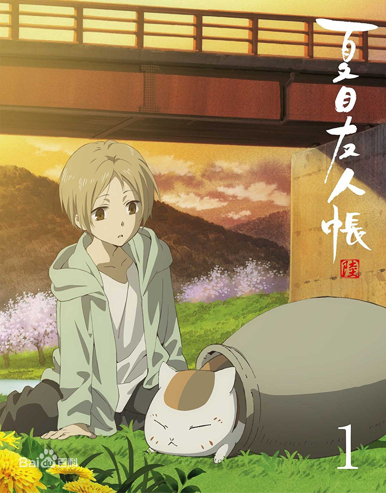

夏目友人帐
作品背景
《夏目友人帐》是由日本动画公司Brain's Base制作的电视动画作品，于2008年7月7日播放，全13话。作品改编自绿川幸创作的同名漫画。
动画第二季《续夏目友人帐》于2009年1月5日播放，第三季《夏目友人帐叁》于2011年7月4日播放，第四季《夏目友人帐肆》于2012年1月2日播放，第五季《夏目友人帐伍》于2016年10月4日放送，第六季《夏目友人帐陆》于2017年4月放送。
该作讲述了从小就能看见妖怪的少年夏目贵志自从他继承了外祖母收妖怪作小弟时作为证明写有妖怪名字的“友人帐”之后，就一直过着被妖怪追逐的日子。后来遇到自称保镖的妖怪猫咪老师，自此在它的陪伴下，决定将名字还给妖怪的夏目，开始和各式各样的妖怪相遇，并逐渐理解妖怪内心的想法。在和妖怪的相遇离别，以及了解心地善良的妖怪们的回忆的过程中，夏目不知不觉得到了很多珍贵的东西。
故事介绍
男主角夏目贵志生来拥有强大的灵力，能感知平常人所无法接触的妖怪神明的存在。因其父母双亡，多年间辗转于互相推卸责任的亲戚之间，同时被其能力影响，受到同龄人的欺负，未曾与任何人深交，造成性格一定程度上的孤僻。本性和善，宽厚，踏实，对于自己经历的不幸，无论人类还是妖怪都未曾怨恨过。被善良的藤原夫妇收养后踏入高中。一次被妖怪追赶的时候打破了一只强大妖怪“斑”的封印，继而牵涉到夏目贵志的祖母夏目玲子的遗物“友人帐”——一本记录着众多妖怪名字的契约书。对友人帐产生兴趣的“斑”与贵志定下约定，自己作为保镖保护其一生以替换友人帐的所有权，平日则化身成大头招财猫模样的“猫咪老师”。在猫咪老师的陪伴以及八原妖怪和同学们关心鼓励下，夏目贵志经历过一个个奇异、悲伤、怀念、令人感动的怪诞故事，逐渐学会与人类、妖怪友好相处，写出一段段充满人性哲理的温馨物语。
原来夏目的祖母玲子，也和夏目一样有灵异体质，大家都对她敬而远之。玲子因为十分寂寞，便到处向妖怪下战书，并要战败的妖怪交出名字，订立服从的契约。而夏目拿到的，正是这本写有众多妖怪名字，能够号令百妖，力量引人觊觎的“友人帐”！ 夏目在得知事情原委之后，不愿以友人帐来束缚着妖怪，决心要将“友人帐”上的名字， 一一还给被外祖母击败的妖怪。而想要拿到友人帐的妖怪“猫咪老师”，则与夏目达成契约成为保镖，保护夏目和“友人帐”，从此踏上了与各色妖怪的邂逅之路。在此过程中夏目也收获了感动和友情，认识了很多朋友，并开始从另一个方面认识妖怪。这些变化让夏目逐渐开朗起来，不再是童年那个四处被人嫌弃的小孩。
角色简介
夏目贵志（神谷浩史）：玲子的孙子，是稀有的拥有妖力的人。双亲都过世了。因为自己这个奇怪的力量而被亲戚推来推去。并被妖怪们把自己和玲子弄错了而追得到处逃跑。

猫咪老师/斑（井上和彦）
拥有招财猫的外观，普通人也可以看见其身体。因为被封印在招财猫的外形里，而逐渐习惯并染上了猫的习气。和夏目约定夏目死后把友人帐送给他，同时帮助夏目把名字还给妖怪。是夏目的老师，兼保镖喵咪。

番剧观看网址
动漫官方贴吧
动画音乐

END